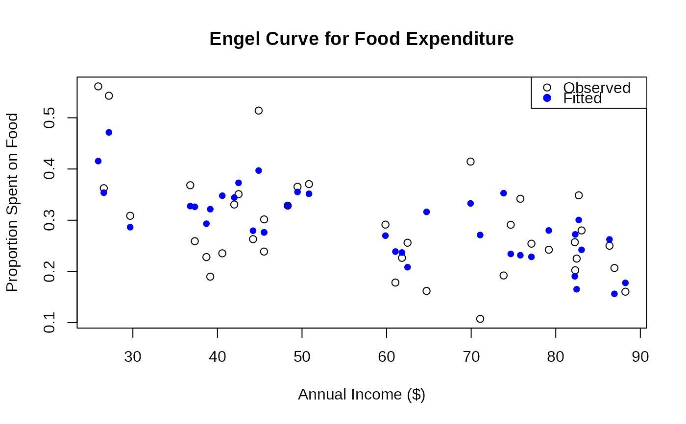

Cross-section data on annual food expenditure and annual income for a random sample of households in a large U.S. city. The dataset models the proportion of income spent on food as a function of total income and household size.
Format
A data frame with 38 observations on 3 variables:
- food
numeric. Annual food expenditure in U.S. dollars.
- income
numeric. Annual household income in U.S. dollars.
- persons
numeric. Number of persons in the household.
Details
This classic econometric dataset was taken from Griffiths et al. (1993, Table 15.4) who cite Leser (1963) as the original source. The data are used to model Engel curves, which describe how household expenditure on a particular good or service varies with household income.
The response variable of interest is typically food/income, the proportion
of income spent on food, which follows beta distribution properties as it is
bounded between 0 and 1.
References
Cribari-Neto, F., and Zeileis, A. (2010). Beta Regression in R. Journal of Statistical Software, 34(2), 1–24. doi:10.18637/jss.v034.i02
Ferrari, S.L.P., and Cribari-Neto, F. (2004). Beta Regression for Modeling Rates and Proportions. Journal of Applied Statistics, 31(7), 799–815.
Griffiths, W.E., Hill, R.C., and Judge, G.G. (1993). Learning and Practicing Econometrics. New York: John Wiley and Sons.
Leser, C.E.V. (1963). Forms of Engel Functions. Econometrica, 31(4), 694–703.
Examples
# \donttest{
require(gkwreg)
require(gkwdist)
data(FoodExpenditure)
FoodExpenditure$prop <- FoodExpenditure$food / FoodExpenditure$income
# Example 1: Basic Kumaraswamy regression
# Proportion spent on food decreases with income (Engel's law)
# Larger households spend more on food
fit_kw <- gkwreg(prop ~ income + persons,
data = FoodExpenditure,
family = "kw"
)
summary(fit_kw)
#>
#> Generalized Kumaraswamy Regression Model Summary
#>
#> Family: kw
#>
#> Call:
#> gkwreg(formula = prop ~ income + persons, data = FoodExpenditure,
#> family = "kw")
#>
#> Residuals:
#> Min Q1.25% Median Mean Q3.75% Max
#> -0.1636 -0.0376 0.0095 -0.0022 0.0480 0.1458
#>
#> Coefficients:
#> Estimate Std. Error z value Pr(>|z|)
#> alpha:(Intercept) 1.622786 0.177013 9.168 < 2e-16 ***
#> alpha:income -0.007130 0.001623 -4.393 1.12e-05 ***
#> alpha:persons 0.083647 0.019204 4.356 1.33e-05 ***
#> beta:(Intercept) 5.162036 0.658351 7.841 4.47e-15 ***
#> ---
#> Signif. codes: 0 ‘***’ 0.001 ‘**’ 0.01 ‘*’ 0.05 ‘.’ 0.1 ‘ ’ 1
#>
#> Confidence intervals (95%):
#> 3% 98%
#> alpha:(Intercept) 1.2758 1.9697
#> alpha:income -0.0103 -0.0039
#> alpha:persons 0.0460 0.1213
#> beta:(Intercept) 3.8717 6.4524
#>
#> Link functions:
#> alpha: log
#> beta: log
#>
#> Fitted parameter means:
#> alpha: 4.598
#> beta: 174.3
#> gamma: 1
#> delta: 0
#> lambda: 1
#>
#> Model fit statistics:
#> Number of observations: 38
#> Number of parameters: 4
#> Residual degrees of freedom: 34
#> Log-likelihood: 45.77
#> AIC: -83.54
#> BIC: -76.99
#> RMSE: 0.07455
#> Efron's R2: 0.4446
#> Mean Absolute Error: 0.05842
#>
#> Convergence status: Successful
#> Iterations: 17
#>
# Interpretation:
# - Alpha: Negative income effect (Engel's law)
# Positive household size effect
# - Beta: Constant precision (homoscedastic model)
# Example 2: Heteroscedastic model
# Variability in food proportion may differ by income and household size
fit_kw_hetero <- gkwreg(
prop ~ income + persons |
income + persons,
data = FoodExpenditure,
family = "kw"
)
summary(fit_kw_hetero)
#>
#> Generalized Kumaraswamy Regression Model Summary
#>
#> Family: kw
#>
#> Call:
#> gkwreg(formula = prop ~ income + persons | income + persons,
#> data = FoodExpenditure, family = "kw")
#>
#> Residuals:
#> Min Q1.25% Median Mean Q3.75% Max
#> -0.1736 -0.0356 0.0125 0.0002 0.0382 0.1546
#>
#> Coefficients:
#> Estimate Std. Error z value Pr(>|z|)
#> alpha:(Intercept) 1.891196 0.326327 5.795 6.82e-09 ***
#> alpha:income 0.001421 0.004482 0.317 0.751221
#> alpha:persons -0.090024 0.045650 -1.972 0.048604 *
#> beta:(Intercept) 7.500712 2.073678 3.617 0.000298 ***
#> beta:income 0.042825 0.030398 1.409 0.158900
#> beta:persons -1.017206 0.291303 -3.492 0.000480 ***
#> ---
#> Signif. codes: 0 ‘***’ 0.001 ‘**’ 0.01 ‘*’ 0.05 ‘.’ 0.1 ‘ ’ 1
#>
#> Confidence intervals (95%):
#> 3% 98%
#> alpha:(Intercept) 1.2516 2.5308
#> alpha:income -0.0074 0.0102
#> alpha:persons -0.1795 -0.0006
#> beta:(Intercept) 3.4364 11.5650
#> beta:income -0.0168 0.1024
#> beta:persons -1.5882 -0.4463
#>
#> Link functions:
#> alpha: log
#> beta: log
#>
#> Fitted parameter means:
#> alpha: 5.28
#> beta: 2782
#> gamma: 1
#> delta: 0
#> lambda: 1
#>
#> Model fit statistics:
#> Number of observations: 38
#> Number of parameters: 6
#> Residual degrees of freedom: 32
#> Log-likelihood: 51.68
#> AIC: -91.36
#> BIC: -81.54
#> RMSE: 0.06989
#> Efron's R2: 0.5118
#> Mean Absolute Error: 0.05405
#>
#> Convergence status: Successful
#> Iterations: 31
#>
# Interpretation:
# - Beta: Precision varies with both income and household size
# Wealthier or larger households may show different spending variability
# Test for heteroscedasticity
anova(fit_kw, fit_kw_hetero)
#> Analysis of Deviance Table
#>
#> Model 1: prop ~ income + persons
#> Model 2: prop ~ income + persons | income + persons
#>
#> Resid. Df Resid. Dev Df Deviance Pr(>Chi)
#> fit_kw 34.00000 -91.53671
#> fit_kw_hetero 32.00000 -103.36364 2 11.82693 0.0027028 **
#> ---
#> Signif. codes: 0 '***' 0.001 '**' 0.01 '*' 0.05 '.' 0.1 ' ' 1
# Example 3: Exponentiated Kumaraswamy for extreme spending patterns
# Some households may have unusual food spending (very frugal or lavish)
fit_ekw <- gkwreg(
prop ~ income + persons | # alpha
persons | # beta: household size affects precision
income, # lambda: income affects extremity
data = FoodExpenditure,
family = "ekw"
)
summary(fit_ekw)
#>
#> Generalized Kumaraswamy Regression Model Summary
#>
#> Family: ekw
#>
#> Call:
#> gkwreg(formula = prop ~ income + persons | persons | income,
#> data = FoodExpenditure, family = "ekw")
#>
#> Residuals:
#> Min Q1.25% Median Mean Q3.75% Max
#> -0.1932 -0.0295 0.0234 0.0037 0.0396 0.1747
#>
#> Coefficients:
#> Estimate Std. Error z value Pr(>|z|)
#> alpha:(Intercept) 2.188747 0.450856 4.855 1.21e-06 ***
#> alpha:income -0.003871 0.001919 -2.018 0.04362 *
#> alpha:persons -0.109282 0.051203 -2.134 0.03282 *
#> beta:(Intercept) 9.826068 3.736875 2.629 0.00855 **
#> beta:persons -1.105766 0.502560 -2.200 0.02779 *
#> lambda:(Intercept) 0.682952 1.182022 0.578 0.56341
#> lambda:income -0.010845 0.013268 -0.817 0.41369
#> ---
#> Signif. codes: 0 ‘***’ 0.001 ‘**’ 0.01 ‘*’ 0.05 ‘.’ 0.1 ‘ ’ 1
#>
#> Confidence intervals (95%):
#> 3% 98%
#> alpha:(Intercept) 1.3051 3.0724
#> alpha:income -0.0076 -0.0001
#> alpha:persons -0.2096 -0.0089
#> beta:(Intercept) 2.5019 17.1502
#> beta:persons -2.0908 -0.1208
#> lambda:(Intercept) -1.6338 2.9997
#> lambda:income -0.0368 0.0152
#>
#> Link functions:
#> alpha: log
#> beta: log
#> lambda: log
#>
#> Fitted parameter means:
#> alpha: 4.906
#> beta: 1260
#> gamma: 1
#> delta: 0
#> lambda: 1.018
#>
#> Model fit statistics:
#> Number of observations: 38
#> Number of parameters: 7
#> Residual degrees of freedom: 31
#> Log-likelihood: 50.31
#> AIC: -86.63
#> BIC: -75.17
#> RMSE: 0.07347
#> Efron's R2: 0.4605
#> Mean Absolute Error: 0.05648
#>
#> Convergence status: Successful
#> Iterations: 63
#>
# Interpretation:
# - Lambda: Income level affects tail behavior
# Rich households may show more extreme (unusual) spending patterns
# Visualization: Engel curve
plot(prop ~ income,
data = FoodExpenditure,
xlab = "Annual Income ($)", ylab = "Proportion Spent on Food",
main = "Engel Curve for Food Expenditure"
)
# Add fitted values
FoodExpenditure$fitted_kw <- fitted(fit_kw)
points(FoodExpenditure$income, FoodExpenditure$fitted_kw,
col = "blue", pch = 19, cex = 0.8
)
legend("topright",
legend = c("Observed", "Fitted"),
col = c("black", "blue"), pch = c(1, 19)
)

# }